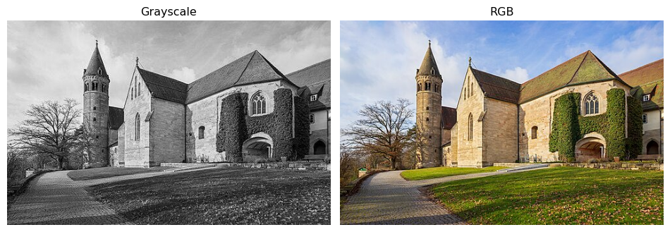
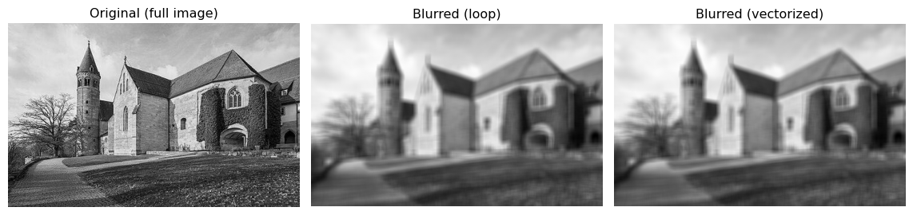

import numpy as npLab1-2. NumPy Basics for Machine Learning

Objectives
- Understand the basic concepts of NumPy arrays: creation,
shape,dtype, andndim. - Indexing: Select rows, columns, and subsets using slice notation and fancy indexing.
- Reshaping: Change array dimensions with
reshapeandnp.newaxis. - Vectorization: Learn how to replace slow Python loops with fast, C-optimized array operations.
- Broadcasting: Grasp the rules NumPy uses to perform operations on arrays of different shapes.
- Matrix Multiplication: Use
np.matmul(the@operator) for linear algebra. - Random Number Generation: Produce reproducible random data with a seeded PRNG.
- Reductions: Summarize arrays along one or more axes with
sum,min,max, etc.
NoteBasic Concept: Why NumPy?
In Machine Learning, we deal with massive amounts of data (vectors, matrices, tensors). Standard Python lists are too slow and memory-inefficient for these calculations. NumPy arrays are stored in contiguous blocks of memory and operations are implemented in highly optimized C code, making mathematical operations drastically faster. NumPy is the foundational library that modern deep learning frameworks (like PyTorch and TensorFlow) are built upon.
1. Array Creation and Attributes
Before we manipulate data, we need to know how to create arrays and inspect their properties.
# 1-Dimensional Array (Vector)
# np.array infers the dtype from the input: integers → int64, floats → float64
a = np.array([1, 2, 3, 4, 5])
print("a =", a)
print("dtype:", a.dtype)
print("shape:", a.shape) # tuple: (number of elements,)
print("ndim :", a.ndim) # number of dimensionsa = [1 2 3 4 5]
dtype: int64
shape: (5,)
ndim : 1Arithmetic operators apply element-wise — no loop required.
x = np.array([1.0, 6.0, 2.4])
print("x + 2 =", x + 2) # add scalar to every element
print("x * 2 =", x * 2) # multiply every element
print("x / 2 =", x / 2) # divide every element
print("x + x =", x + x) # add two same-shape arrays element-wise
print("x / x =", x / x) # divide element-wisex + 2 = [3. 8. 4.4]
x * 2 = [ 2. 12. 4.8]
x / 2 = [0.5 3. 1.2]
x + x = [ 2. 12. 4.8]
x / x = [1. 1. 1.]Data Types (dtype)
NumPy stores all elements of an array in the same dtype. The default depends on the input literals: integer literals → int64, any float literal → float64.
y_int = np.array([1, 4, 3]) # no decimal → int64
y_f64 = np.array([1., 4, 3]) # one decimal point → float64
y_f32 = np.array([1., 4, 3], dtype=np.float32) # explicit 32-bit float
print("int64 :", y_int.dtype, " | nbytes:", y_int.nbytes) # 8 bytes per element
print("float64:", y_f64.dtype, " | nbytes:", y_f64.nbytes) # 8 bytes per element
print("float32:", y_f32.dtype, " | nbytes:", y_f32.nbytes) # 4 bytes per elementint64 : int64 | nbytes: 24
float64: float64 | nbytes: 24
float32: float32 | nbytes: 12When you mix dtypes, NumPy upcasts the result to the higher-precision type so no information is lost.
z = y_f64 + y_f32 # float64 + float32 → float64
print("result dtype:", z.dtype)result dtype: float64
WarningCaveat: Data Types (dtype)
In deep learning, memory is expensive. Most frameworks default to float32 rather than float64. When you load data or create arrays, explicitly pass dtype=np.float32 to halve memory usage without meaningful loss in precision for gradient-based training.
# 2-Dimensional Array (Matrix)
B = np.array([[1, 2], [3, 4], [5, 6]])
print("B =\n", B)
print("dtype:", B.dtype)
print("shape:", B.shape) # (rows, columns)
print("ndim :", B.ndim)B =
[[1 2]
[3 4]
[5 6]]
dtype: int64
shape: (3, 2)
ndim : 2# Frequently used creation functions
print("Zeros:\n", np.zeros(5))
print("Ones:\n", np.ones((2, 3)))
print("Arange:\n", np.arange(0, 10, 2)) # start, stop (exclusive), step
print("Linspace:\n", np.linspace(0, 1, 5)) # 5 evenly spaced values (inclusive)Zeros:
[0. 0. 0. 0. 0.]
Ones:
[[1. 1. 1.]
[1. 1. 1.]]
Arange:
[0 2 4 6 8]
Linspace:
[0. 0.25 0.5 0.75 1. ]# Log-spaced values — common for sweeping learning rates or regularisation strengths
print("Logspace:\n", np.logspace(-2, 2, num=5, base=10)) # 0.01, 0.1, 1, 10, 100Logspace:
[1.e-02 1.e-01 1.e+00 1.e+01 1.e+02]np.sort returns a sorted copy; np.argsort returns the indices that would sort the array — useful for ranking predictions or retrieving nearest neighbours.
arr = np.array([5.9, 0.0, 3.0, -2.1])
print("sorted :", np.sort(arr))
print("argsort :", np.argsort(arr)) # [3, 1, 2, 0]
print("arr[argsort] :", arr[np.argsort(arr)]) # same as sortedsorted : [-2.1 0. 3. 5.9]
argsort : [3 1 2 0]
arr[argsort] : [-2.1 0. 3. 5.9]For 2-D arrays, pass axis to sort along rows or columns.
A_25 = np.array([[3, 4, 5, 1, 2], [9, 7, 8, 6, 0]])
print("sort each row (axis=1):\n", np.sort(A_25, axis=1))
print("argsort each row (axis=1):\n", np.argsort(A_25, axis=1))sort each row (axis=1):
[[1 2 3 4 5]
[0 6 7 8 9]]
argsort each row (axis=1):
[[3 4 0 1 2]
[4 3 1 2 0]]np.allclose checks element-wise equality up to a tolerance — handy when unit-testing numerical implementations.
a = np.array([1.0, 2.0, 3.0])
b = a + 1e-8
print("Exact equal :", np.all(a == b))
print("Close enough :", np.allclose(a, b, atol=1e-6))Exact equal : False
Close enough : True2. Indexing and Slicing
Accessing elements in NumPy is similar to standard Python lists but extends to multiple dimensions.
x = np.array([10, 20, 30, 40, 50])
print("First element:", x[0])
print("Last element:", x[-1])
print("Slice [1:4]:", x[1:4]) # Indices 1, 2, 3 (exclusive of 4)
print("Step slice [::2]:", x[::2]) # Every 2nd element from start to endFirst element: 10
Last element: 50
Slice [1:4]: [20 30 40]
Step slice [::2]: [10 30 50]M = np.arange(12).reshape(3, 4)
print("M =\n", M)
print("Specific element M[1, 2]:", M[1, 2])
print("Entire 2nd row:", M[2, :])
print("Entire 3rd column:", M[:, 3])M =
[[ 0 1 2 3]
[ 4 5 6 7]
[ 8 9 10 11]]
Specific element M[1, 2]: 6
Entire 2nd row: [ 8 9 10 11]
Entire 3rd column: [ 3 7 11]
WarningCaveat: Slices are Views, Not Copies!
When you slice an array in NumPy, it returns a view of the original memory, not a new array. If you modify the slice, the original array is modified too. If you need an independent copy, explicitly use .copy().
x_slice = x[1:4].copy() 2D Array Indexing
The following examples use a 4×4 matrix to practise all common 2D indexing patterns.

# np.arange(1, 17) gives [1..16]; reshape(4,4) makes it 4×4; transpose flips rows/cols
A_44 = np.arange(1, 17).reshape(4, 4).transpose()
print(A_44)[[ 1 5 9 13]
[ 2 6 10 14]
[ 3 7 11 15]
[ 4 8 12 16]]print("First row :", A_44[0]) # single integer → selects a row
print("First col :", A_44[:, 0]) # colon = all rows; 0 = column 0
print("Last row :", A_44[-1]) # negative index counts from end
print("Second-to-last col :", A_44[:, -2]) # negative column indexFirst row : [ 1 5 9 13]
First col : [1 2 3 4]
Last row : [ 4 8 12 16]
Second-to-last col : [ 9 10 11 12]print("Rows 0–2 (A_44[0:3]):\n", A_44[0:3])
print("\nRows 0–2, cols 1–3 (A_44[0:3, 1:4]):\n", A_44[0:3, 1:4])
print("\nRows 0–1, all cols (A_44[0:2, :]):\n", A_44[0:2, :])Rows 0–2 (A_44[0:3]):
[[ 1 5 9 13]
[ 2 6 10 14]
[ 3 7 11 15]]
Rows 0–2, cols 1–3 (A_44[0:3, 1:4]):
[[ 5 9 13]
[ 6 10 14]
[ 7 11 15]]
Rows 0–1, all cols (A_44[0:2, :]):
[[ 1 5 9 13]
[ 2 6 10 14]]Fancy Indexing
Passing a list or integer array selects multiple rows at once. The result is always a copy (not a view), and indices can be repeated or in any order.
print("Rows 1 and 3:\n", A_44[[1, 3]])Rows 1 and 3:
[[ 2 6 10 14]
[ 4 8 12 16]]more_ids = np.array([3, 3, 1, 0], dtype=np.int32)
print("Repeated / unsorted rows:\n", A_44[more_ids])Repeated / unsorted rows:
[[ 4 8 12 16]
[ 4 8 12 16]
[ 2 6 10 14]
[ 1 5 9 13]]
WarningFancy indexing requires integer indices
Float arrays cannot be used as indices — NumPy raises an IndexError.
row_ids_f64 = np.array([1.0, 3.0])
A_44[row_ids_f64] # IndexError: arrays used as indices must be of integer (or boolean) type3. Reshaping and np.newaxis
Machine learning code frequently needs to change an array’s shape without changing its data. Two tools cover almost every case: reshape and np.newaxis.
reshape
array.reshape(new_shape) returns a view with a different shape. The total number of elements must stay the same.

y = np.array([1.0, 4, 3])
print("y shape:", y.shape)
y_13 = y.reshape(1, 3) # row vector → (1, 3)
y_31 = y.reshape(3, 1) # column vector → (3, 1)
print("y_13 =", y_13, " shape:", y_13.shape)
print("y_31 =\n", y_31, "shape:", y_31.shape)y shape: (3,)
y_13 = [[1. 4. 3.]] shape: (1, 3)
y_31 =
[[1.]
[4.]
[3.]] shape: (3, 1)np.newaxis
np.newaxis inserts a new axis of size 1 at the chosen position — a concise alternative to reshape for adding a single dimension.
y_3 = np.array([1.0, 4, 3])
y_13 = y_3[np.newaxis, :] # (1, 3) — row vector
y_31 = y_3[:, np.newaxis] # (3, 1) — column vector
y_311 = y_3[:, np.newaxis, np.newaxis] # (3, 1, 1)
print("y_13 shape:", y_13.shape)
print("y_31 shape:", y_31.shape)
print("y_311 shape:", y_311.shape)y_13 shape: (1, 3)
y_31 shape: (3, 1)
y_311 shape: (3, 1, 1)Example: pairwise subtraction with np.newaxis
Suppose you have a (3×3) matrix x and a (2×3) matrix y, and you want to subtract every row of y from every row of x, producing a (3, 2, 3) result. Direct subtraction fails because the shapes are incompatible.
x_33 = np.array([[5., 2, 1], [4, 2, 6], [1, 1, 0]])
y_23 = np.array([[1.0, 4, 3], [2, 1, 4]])
try:
x_33 - y_23
except ValueError as e:
print("ValueError:", e)ValueError: operands could not be broadcast together with shapes (3,3) (2,3) Inserting np.newaxis makes the shapes broadcast-compatible:
# x_33[:, np.newaxis, :] → (3, 1, 3)
# y_23[np.newaxis, :, :] → (1, 2, 3)
# result → (3, 2, 3) via broadcasting
z_323 = x_33[:, np.newaxis, :] - y_23[np.newaxis, :, :]
print("result shape:", z_323.shape)
print("row 0 of y subtracted from all rows of x:\n", z_323[:, 0, :])
print("row 1 of y subtracted from all rows of x:\n", z_323[:, 1, :])result shape: (3, 2, 3)
row 0 of y subtracted from all rows of x:
[[ 4. -2. -2.]
[ 3. -2. 3.]
[ 0. -3. -3.]]
row 1 of y subtracted from all rows of x:
[[ 3. 1. -3.]
[ 2. 1. 2.]
[-1. 0. -4.]]4. Vectorization
Vectorization is the process of applying an operation to an entire array at once, rather than iterating through its elements using a for loop. This results in cleaner code and massive performance boosts.
# Non-vectorized approach: Python 'for' loop
def sum_squares_loop(arr):
total = 0
for x in arr:
total += x ** 2
return total
# Vectorized approach: NumPy array operation
def sum_squares_vec(arr):
return (arr ** 2).sum()Let’s test the speed difference:
large = np.random.randn(100_000)
print("Loop time:")
%timeit sum_squares_loop(large)
print("Vectorized time:")
%timeit sum_squares_vec(large)Loop time:
8.5 ms ± 57.1 μs per loop (mean ± std. dev. of 7 runs, 100 loops each)
Vectorized time:
24.4 μs ± 17.3 ns per loop (mean ± std. dev. of 7 runs, 10,000 loops each)Vectorization makes applying mathematical functions to arrays trivial. For example, implementing the Sigmoid activation function \(\sigma(z) = \frac{1}{1 + e^{-z}}\):
def sigmoid(z):
return 1 / (1 + np.exp(-z))
z = np.linspace(-5, 5, 11)
print("z =", z)
print("sigmoid(z) =", sigmoid(z))z = [-5. -4. -3. -2. -1. 0. 1. 2. 3. 4. 5.]
sigmoid(z) = [0.00669285 0.01798621 0.04742587 0.11920292 0.26894142 0.5
0.73105858 0.88079708 0.95257413 0.98201379 0.99330715]5. Broadcasting
Broadcasting is a powerful mechanism that allows NumPy to perform operations on arrays of different shapes.
The Rule of Broadcasting: NumPy compares array shapes from right to left. Two dimensions are compatible if:
- They are equal, or
- One of them is 1. If an array has fewer dimensions, a dimension of
1is implicitly prepended to its shape.

# Shape (3, 4) + Shape (4,)
# The (4,) is treated as (1, 4), then copied across 3 rows to match (3, 4)
A = np.arange(12).reshape(3, 4)
b = np.array([1, 2, 3, 4])
print("A =\n", A)
print("b =", b)
print("A + b =\n", A + b)A =
[[ 0 1 2 3]
[ 4 5 6 7]
[ 8 9 10 11]]
b = [1 2 3 4]
A + b =
[[ 1 3 5 7]
[ 5 7 9 11]
[ 9 11 13 15]]# Shape (3, 4) + Shape (3, 1)
# The (3, 1) array is copied across 4 columns to match (3, 4)
c = np.array([[10], [20], [30]])
print("c =\n", c)
print("A + c =\n", A + c)c =
[[10]
[20]
[30]]
A + c =
[[10 11 12 13]
[24 25 26 27]
[38 39 40 41]]Practical Example: Normalizing Data A very common task in ML is normalizing data (e.g., making rows sum to 1).
# keepdims=True ensures the shape remains (3, 1) instead of dropping to (3,)
row_sums = A.sum(axis=1, keepdims=True)
print("row_sums (shape", row_sums.shape, ") =\n", row_sums)
normalized = A / row_sums
print("Normalized A (rows sum to 1):\n", normalized)
print("Verify row sums:", normalized.sum(axis=1))row_sums (shape (3, 1) ) =
[[ 6]
[22]
[38]]
Normalized A (rows sum to 1):
[[0. 0.16666667 0.33333333 0.5 ]
[0.18181818 0.22727273 0.27272727 0.31818182]
[0.21052632 0.23684211 0.26315789 0.28947368]]
Verify row sums: [1. 1. 1.]
WarningCaveat: The Danger of Rank-1 Arrays
Arrays with shape (N,) are called Rank-1 arrays (e.g., b in the example above). They do not behave like traditional row or column vectors and can cause confusing broadcasting bugs. Best Practice in ML: Always reshape your 1D vectors into explicit 2D row matrices (1, N) or column matrices (N, 1) using .reshape(-1, 1) or np.newaxis to avoid unintended broadcasting behaviors.
6. Matrix Multiplication
Use np.matmul (or the @ operator) for standard matrix multiplication. Unlike *, which is element-wise, matmul computes the inner product of rows and columns:
\[C[i, k] = \sum_j A[i, j] \cdot B[j, k]\]
Shapes must satisfy (M, K) @ (K, N) → (M, N).

M_33 = np.array([[1., 4, 7], [2, 5, 8], [3, 6, 9]])
y_3 = np.array([1.0, 4, 3])
# (3, 3) @ (3, 1) → (3, 1)
print("M @ y (column):\n", np.matmul(M_33, y_3[:, np.newaxis]))
# (3, 3) @ (3, 3) → (3, 3)
print("\nM @ M:\n", np.matmul(M_33, M_33))M @ y (column):
[[38.]
[46.]
[54.]]
M @ M:
[[ 30. 66. 102.]
[ 36. 81. 126.]
[ 42. 96. 150.]]When both inputs are 1-D, matmul computes the inner (dot) product and returns a scalar.
print("y · y =", np.matmul(y_3, y_3)) # scalar inner product
print("y · y =", np.inner(y_3, y_3)) # equivalent
print("y · y =", np.sum(y_3 ** 2)) # another way to write ity · y = 26.0
y · y = 26.0
y · y = 26.07. Random Number Generation
Reproducible randomness is essential in ML — experiments must produce identical results when re-run. Always seed your generator with np.random.RandomState.
# Without a seed — different values on every run
x = np.random.uniform(size=5)
print("Uniform [0, 1):", x)
x = np.random.normal(size=5)
print("Standard normal:", x)Uniform [0, 1): [0.33364994 0.7871066 0.29802901 0.45752093 0.35418126]
Standard normal: [-1.24027715 -0.05460592 0.29675209 0.26515254 -1.10523266]seed = 9876
prng = np.random.RandomState(seed)
print("Run 1:", prng.uniform(size=5))
prng = np.random.RandomState(seed) # same seed → identical sequence
print("Run 2:", prng.uniform(size=5))
prng = np.random.RandomState(1234) # different seed → different sequence
print("Run 3:", prng.uniform(size=5))Run 1: [0.1636023 0.62062216 0.90113139 0.7664971 0.51324219]
Run 2: [0.1636023 0.62062216 0.90113139 0.7664971 0.51324219]
Run 3: [0.19151945 0.62210877 0.43772774 0.78535858 0.77997581]permutation returns a shuffled copy of an array — useful for randomising the order of training examples before each epoch.
arr = np.arange(1, 6)
prng = np.random.RandomState(8675309)
print("Shuffle 1:", prng.permutation(arr))
print("Shuffle 2:", prng.permutation(arr))Shuffle 1: [3 5 4 1 2]
Shuffle 2: [3 4 2 5 1]8. Reductions
Functions like np.sum, np.min, np.max, and np.mean reduce an array by collapsing one or more axes into a single value. The optional axis argument controls which dimension is collapsed.

A_44 = np.arange(1, 17).reshape(4, 4).transpose()
print("A_44:\n", A_44)
print("sum all :", np.sum(A_44))
print("sum axis=0 :", np.sum(A_44, axis=0)) # collapse rows → one value per column
print("sum axis=1 :", np.sum(A_44, axis=1)) # collapse cols → one value per row
print("min axis=1 :", np.min(A_44, axis=1)) # min of each rowA_44:
[[ 1 5 9 13]
[ 2 6 10 14]
[ 3 7 11 15]
[ 4 8 12 16]]
sum all : 136
sum axis=0 : [10 26 42 58]
sum axis=1 : [28 32 36 40]
min axis=1 : [1 2 3 4]The same axis argument works on higher-dimensional arrays.
Q_234 = np.arange(1, 25).reshape(2, 3, 4)
print("Q_234 shape:", Q_234.shape)
print("min axis=0:\n", np.min(Q_234, axis=0)) # shape (3, 4)
print("min axis=1:\n", np.min(Q_234, axis=1)) # shape (2, 4)
print("min axis=2:\n", np.min(Q_234, axis=2)) # shape (2, 3)
print("min axis=(1,2):", np.min(Q_234, axis=(1, 2))) # shape (2,) — collapse both dimsQ_234 shape: (2, 3, 4)
min axis=0:
[[ 1 2 3 4]
[ 5 6 7 8]
[ 9 10 11 12]]
min axis=1:
[[ 1 2 3 4]
[13 14 15 16]]
min axis=2:
[[ 1 5 9]
[13 17 21]]
min axis=(1,2): [ 1 13]9. Image Feature Extraction
A single photo (e.g. of a house or street) is just a NumPy array: grayscale images have shape (height, width) and color images (height, width, 3) for red, green, and blue. We will load both versions of the same scene, compare how they are stored, then use sliding local windows over the grayscale image to build a simple blur—each output pixel is the mean of a small square of input pixels. The same idea (local windows over a grid) appears in time series (rolling averages) and in convolutional layers in deep learning.
Loading the image: grayscale and color
We use two files: a grayscale PNG and an RGB PNG of the same scene. The image is of the Lorch Monastery church; the original photograph is available at Wikimedia Commons. Grayscale images give one number per pixel, while RGB images give three numbers per pixel (one for each of red, green, and blue). If your grayscale file is instead stored as three identical channels (R=G=B), we collapse it to 2D so we have a single intensity per pixel.
_-_Kloster_Lorch_-_Klosterkirche_-_Ansicht_von_SO_(1).jpg){kind=link}
import subprocess
import matplotlib.pyplot as plt
import matplotlib.image as mpimg
from pathlib import Path
_local = Path("../../data")
if _local.exists():
DATA_DIR = _local
else:
!git clone --branch students --depth 1 --filter=blob:none --sparse \
https://github.com/GLI-Lab/machine-learning-course.git /tmp/ml-course-data
!git -C /tmp/ml-course-data sparse-checkout set data
DATA_DIR = Path("/tmp/ml-course-data/data")
print("DATA_DIR:", DATA_DIR.resolve())
img_gray = mpimg.imread(DATA_DIR / "image_gray.png")
img_rgb = mpimg.imread(DATA_DIR / "image_rgb.png")
# If grayscale was stored as 3-channel (R=G=B), collapse to 2D
if img_gray.ndim == 3:
img_gray = img_gray[:, :, 0]
print("Grayscale shape :", img_gray.shape, "→ one value per pixel")
print("RGB shape :", img_rgb.shape, "→ three values per pixel")DATA_DIR: /home/bkoh/Developer/course/machine-learning-course/data
Grayscale shape : (317, 500) → one value per pixel
RGB shape : (317, 500, 3) → three values per pixelfig, axes = plt.subplots(1, 2, figsize=(10, 4))
axes[0].imshow(img_gray, cmap='gray')
axes[0].set_title("Grayscale")
axes[0].axis("off")
axes[1].imshow(img_rgb)
axes[1].set_title("RGB")
axes[1].axis("off")
plt.tight_layout()
plt.show()
Local windows and simple blur
Replace each pixel by the mean of a small square (e.g. 10×10) around it. That gives a blurred image: edges soften and noise is reduced. We do this by sweeping a sliding window over the array—same idea as a rolling mean along a 1D signal, but in 2D.
A 3×3 window in the top-left corner of the grayscale image looks like this:
top_left = img_gray[:3, :3]
print("Top-left 3×3 block:\n", top_left)
print("Mean of this block:", top_left.mean())Top-left 3×3 block:
[[0.85882354 0.85882354 0.85882354]
[0.83137256 0.83137256 0.8352941 ]
[0.8235294 0.8235294 0.827451 ]]
Mean of this block: 0.83878Double loop: For every possible top-left corner (i, j) on the full image, take the block img[i:i+size, j:j+size], compute its mean, and store it. Clear, but many Python iterations.
import timeit
size = 10
m, n = img_gray.shape
mm, nn = m - size + 1, n - size + 1
result_loop = np.empty((mm, nn))
for i in range(mm):
for j in range(nn):
result_loop[i, j] = img_gray[i : i + size, j : j + size].mean()
def run_loop():
r = np.empty((mm, nn))
for i in range(mm):
for j in range(nn):
r[i, j] = img_gray[i : i + size, j : j + size].mean()
return r
t_loop = timeit.repeat(run_loop, number=1, repeat=10)
print("Loop: {:.4f} s (mean of 10 runs)".format(np.mean(t_loop)))
print("Blurred shape:", result_loop.shape)Loop: 0.4095 s (mean of 10 runs)
Blurred shape: (308, 491)Vectorized view with as_strided: NumPy’s stride_tricks.as_strided lets you reinterpret the same memory as a 4D array of overlapping windows over the full image. No extra memory for the tiles; we only change how we index into the array. Then we take the mean over the last two axes to get one number per window.
from numpy.lib import stride_tricks
shape = (mm, nn, size, size)
strides = 2 * img_gray.strides
windows = stride_tricks.as_strided(img_gray, shape=shape, strides=strides)
result_vec = windows.mean(axis=(-1, -2))
def run_vec():
w = stride_tricks.as_strided(img_gray, shape=shape, strides=strides)
return w.mean(axis=(-1, -2))
t_vec = timeit.repeat(run_vec, number=1, repeat=10)
print("Vectorized: {:.4f} s (mean of 10 runs)".format(np.mean(t_vec)))
print("Same as loop:", np.allclose(result_loop, result_vec))
print("Speedup: {:.1f}x".format(np.mean(t_loop) / np.mean(t_vec)))Vectorized: 0.0190 s (mean of 10 runs)
Same as loop: True
Speedup: 21.6xOutput comparison: Both methods produce the same blurred image over the full image; the vectorized version is typically much faster.
fig, axes = plt.subplots(1, 3, figsize=(12, 4))
axes[0].imshow(img_gray, cmap='gray')
axes[0].set_title("Original (full image)")
axes[0].axis("off")
axes[1].imshow(result_loop, cmap='gray')
axes[1].set_title("Blurred (loop)")
axes[1].axis("off")
axes[2].imshow(result_vec, cmap='gray')
axes[2].set_title("Blurred (vectorized)")
axes[2].axis("off")
plt.tight_layout()
plt.show()
TipStrides and views
The strides of an array tell how many bytes to skip when moving by one step along each dimension. as_strided only changes the shape and strides; it does not copy data, so you get a new view of the same buffer. For production code, libraries like Scikit-Learn provide helpers to extract sliding windows without writing strides by hand.
Summary
Arrays. NumPy’s ndarray is the universal data container in ML. Every dataset, weight matrix, gradient, and activation tensor is an ndarray. Check shape, dtype, and ndim first whenever you encounter a new array.
Indexing. Use arr[i] for rows, arr[:, j] for columns, arr[a:b, c:d] for submatrices, and fancy indexing arr[[i1, i2]] for arbitrary row selections. Slices return views; fancy indexing returns copies.
Reshaping. reshape and np.newaxis let you add or remove size-1 dimensions without copying data. This is the key to making broadcasting work correctly.
Vectorization and Broadcasting. Never use Python for loops for element-wise array math. NumPy’s C-level operations are orders of magnitude faster. Broadcasting extends operations to arrays of different (but compatible) shapes automatically.
Matrix multiplication. np.matmul (or @) is not element-wise — it computes the standard linear algebra product. Keep the distinction clear: A * B vs A @ B.
Reproducibility. Always seed your PRNG (np.random.RandomState(seed)) before generating any random data used in training or evaluation.
Reductions. np.sum, np.min, np.max, np.mean with an explicit axis argument are the standard way to aggregate over samples, features, or time steps without writing loops.